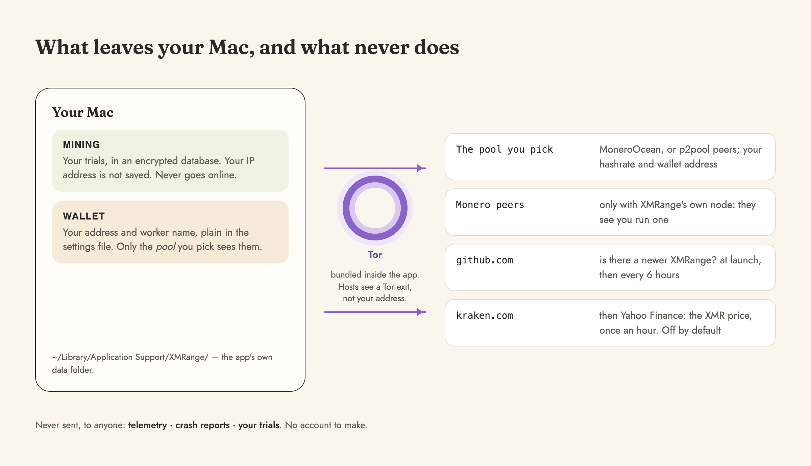

Privacy
XMRange has no account, no analytics and no ads. It connects only to the pool you select, never both pools at once. This page lists everything that leaves your Mac, and says what does not.

What leaves the Mac
| You choose | XMRange connects to | They see |
|---|---|---|
| moneroocean | the MoneroOcean pool, gulf.moneroocean.stream |
your wallet address, your worker name and your hashrate. Your IP address only if Tor is off. |
| p2pool | p2pool peers | your shares. Your payout address is public on the p2pool share chain. Your IP address only if Tor is off. |
| p2pool with XMRange's own node | p2pool peers and Monero peers | the same as above. Monero peers see that you run a node. |
| Tor on (the default) | the Tor network | a Tor connection, nothing more |
| xmr price fetch (off by default) | api.kraken.com, then query1.finance.yahoo.com, through Tor |
one price request each hour |
| update checks | github.com, through Tor |
a request for the latest release, at launch and every 6 hours. Nothing about you or your mining. |
| a problem report, only when you press Send | Nostr relays nos.lol, relay.primal.net, relay.snort.social, nostr.mom, through Tor |
a sealed message from a one-time key. Only House of Helios can open it. |
The price fetch asks you first, and it always goes through Tor, even if you mine directly.
Tor
The bundled Tor client is Arti, from the Tor Project. In settings, the tor row switches between through tor (the default) and direct. With Tor on, the pool or the p2pool peers see a Tor exit instead of your IP address.
Show connections
Settings, network, show connections. It lists what is connected now and what this setup allows. It shows counts and ports only. XMRange does not show or keep an address.
Where things are kept
- Your IP address is not saved.
- Trial results are in an encrypted database. Its key is a private file in the app's data folder, not the Keychain. XMRange keeps trials only, not a second-by-second history.
- Your wallet and worker name are plain text in the settings file, since the pool sees them.
- A crash leaves one scrubbed file,
last-crash.txt, in the app's data folder. It is deleted once the report is sent, closed or dismissed, or after 7 days. - Diagnostics are off until you save one. save as writes a text report where you choose, with no wallet, no IPs and no names.
Problem reports
XMRange never sends a crash or problem report by itself. From version 0.0.2, when something goes wrong, it offers one, and you decide. The full walkthrough, with a before-and-after picture, is on Problem reports.
- When: settings, send feedback, at any time; or an offer at the next launch after XMRange closed unexpectedly. Close the sheet and nothing happens.
- What it holds: the XMRange version, the macOS version, the kind of Mac (Apple silicon or Intel), the last error lines, and your note if you write one. Your wallet, IP address, computer name and folder paths are removed.
- You see all of it: the whole report is on screen, and you can edit it, before anything happens.
- Where it goes: Copy or Save keeps it with you. Send seals it so only House of Helios can read it, signs it with a key made for that one report, and sends it through Tor to the four Nostr relays in the table. They hold it 30 days. No account, no e-mail, no House server, and no one sees your IP address.
- Proof, with a real example: examples/report-input.txt is a made-up Mac's raw lines, with a wallet address, two IP addresses, a home folder, a computer name and a worker name. examples/report-sent.txt is the exact text XMRange would send for them. A test builds it from the code, and fails if the file is stale.
How to report a problem
- After a crash, XMRange asks at the next launch whether to send a report. Or open settings, send feedback, at any time: a crash, a problem or an idea.
- Read the report. Add a note if you like.
- Press Send. If no relay answers, press Copy and keep it.
What never leaves
No telemetry. Nothing sent on its own. No sudo. Nothing from your Mac goes anywhere but the places in the table, and a problem report only when you send it.